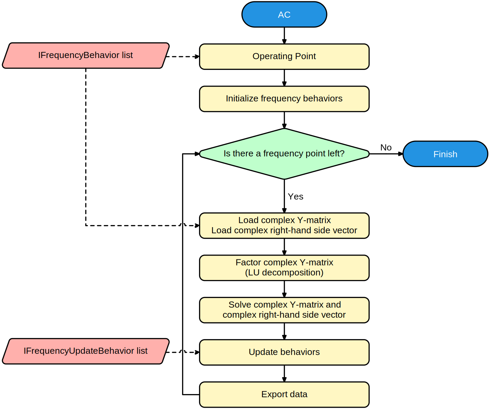

AC / Small Signal analysis
A small signal or AC analysis assumes that a signal amplitude is so small that the circuit can be assumed to behave linearly. It starts out by calculating the Operating point and then linearizing the circuit. It then calculates the complex output.

Frequently encountered issues
All voltage and/or current solutions are 0
There might not be an independent source with a specified AC magnitude and/or phase. Possible reasons for this include:
- The DC value is specified, but not the AC amplitude.
- The independent source is not connected.